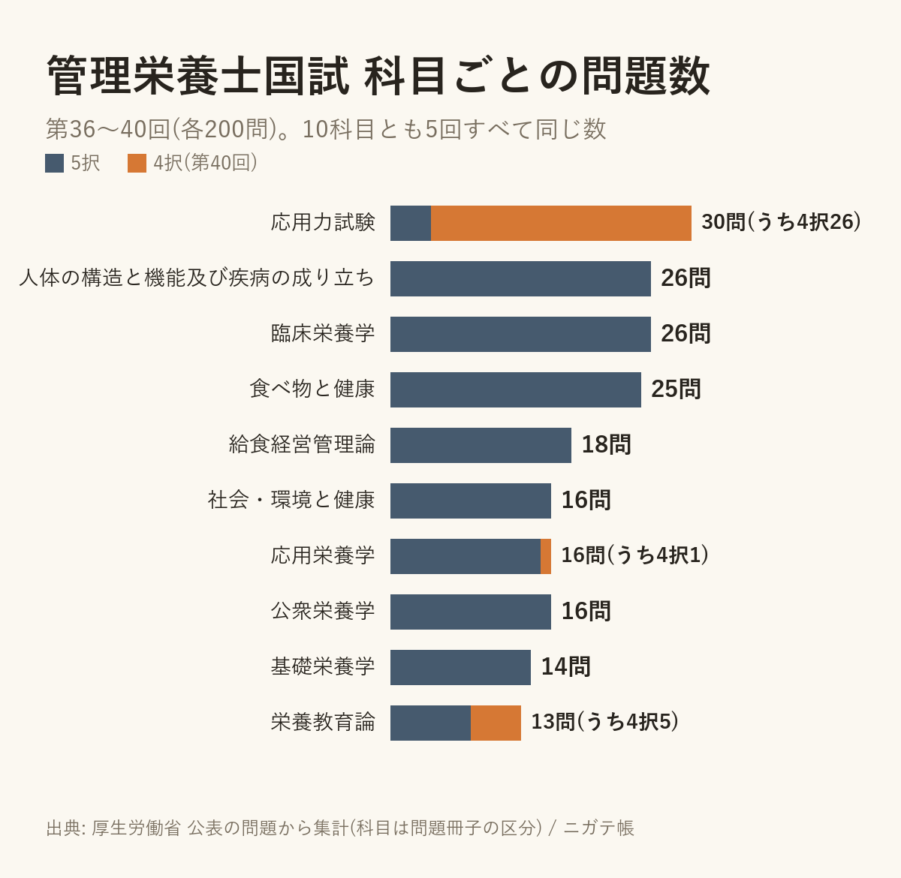

管理栄養士の国試、科目ごとの問題数は5回とも同じ。応用力試験は8〜9割が4択だった
2026-10-07 ・ @apkderete
管理栄養士の第36回から第40回までの1,000問を、科目ごとに数えてみました。介護福祉士でも同じことをしたら毎回ほぼ同じ数だったので、管理栄養士はどうかと思ったのがきっかけです。
結果は、介護福祉士よりもさらにきっちりしていました。
10科目とも、5回すべて同じ数

いちばん多いのは応用力試験の30問。次が人体の構造と機能及び疾病の成り立ちと臨床栄養学の26問ずつ、食べ物と健康の25問と続きます。いちばん少ないのは栄養教育論の13問です。
この数が、第36回から第40回まで、10科目すべてで一度も変わっていませんでした。
応用力試験は、ほとんどが4択
もうひとつ目についたのが選択肢の数です。管理栄養士の問題はほとんどが5択ですが、応用力試験だけは違います。30問のうち4択が、第36回は26問、第37回は24問、第38回と第39回は28問、第40回は26問でした。
ほかの科目で4択があったのは、栄養教育論が毎回3〜6問、あとは臨床栄養学や給食経営管理論などで1回に0〜3問ほどです。
応用力試験は事例を読んで答える問題が中心なので、選択肢を4つにしているのかもしれません。理由はわかりませんが、過去問を解くときに「応用力試験は4択が多い」と知っておくと、選択肢が1つ少ないことに戸惑わずに済みます。
数え方について
科目は問題冊子の区分に合わせています。問題は厚生労働省が公表したものです。数字はアプリに入れている問題データから数えたもので、私の入力に誤りがある可能性はあります。気づいたことがあれば X(@apkderete)で教えてください。
第40回の問題は、1問ずつ正答と解説つきで置いています。
管理栄養士 第40回の過去問と解説 / 介護福祉士の科目ごとの問題数 / 国試の正解の番号を数えた話
解説は私が書いたもので、厚生労働省とは関係ありません。過去問アプリ「ニガテ帳」(iPhone)では、管理栄養士の1,000問を科目ごとにも解けます。